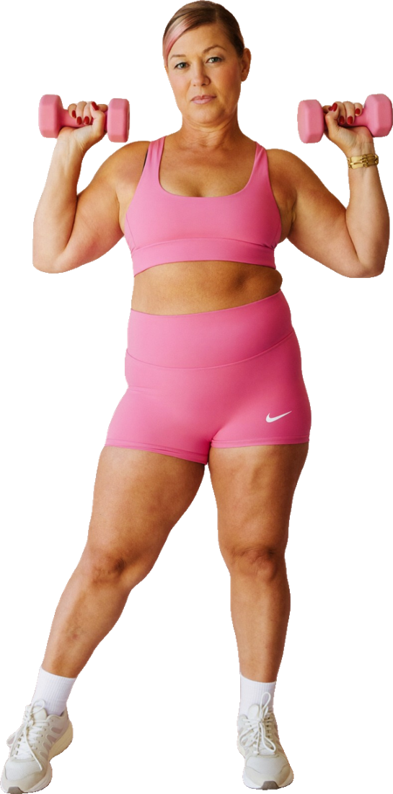

PAUSA · Programa de fuerza03 · Ejercicios
en casa
Herramienta U4-B · Biblioteca
Ocho movimientos, dos rutinas
Alterna Fuerza A y Fuerza B con las series de tu fase. Descansa 60–90 segundos entre series.
1. Sentadilla a sillaA
- · Pies al ancho de cadera, silla detrás.
- · Cadera atrás, baja hasta rozar el asiento.
- · Empuja el suelo y sube exhalando.
2. Remo con apoyoA
- · Una mano en la mesa, espalda recta.
- · Tira la mancuerna hacia la cadera.
- · Baja despacio. Cambia de lado.
3. Puente de glúteoA
- · Boca arriba, rodillas dobladas.
- · Aprieta glúteos y eleva la cadera.
- · Sostén 2 segundos y baja.
4. Elevación de talonesA
- · De pie, apóyate en una silla.
- · Sube a las puntas de los pies.
- · Baja en 3 segundos.
5. Peso muerto rumanoB
- · Mancuernas delante, rodillas suaves.
- · Cadera atrás, espalda recta.
- · Sube apretando glúteos.
6. Flexión inclinadaB
- · Manos en una mesa firme, cuerpo recto.
- · Baja el pecho hacia el borde.
- · Empuja. Más bajo = más difícil.
7. Zancada estáticaB
- · Un pie adelante, mano en la pared.
- · Baja la rodilla de atrás en vertical.
- · Sube. Termina un lado y cambia.
8. Plancha en rodillasB
- · Antebrazos y rodillas en el suelo.
- · Línea recta, abdomen firme.
- · Sostén 15–30 s respirando.
Cierre de cada sesión · equilibrio
Apoyo en un pie junto a una silla, 20–30 segundos por lado, 2 veces. Cuando sea fácil, suelta la mano.
¿Sin mancuernas?
Botellas de agua, una mochila con libros o bandas elásticas sirven para empezar. Lo importante es progresar.
Fuerte después de los 4504
